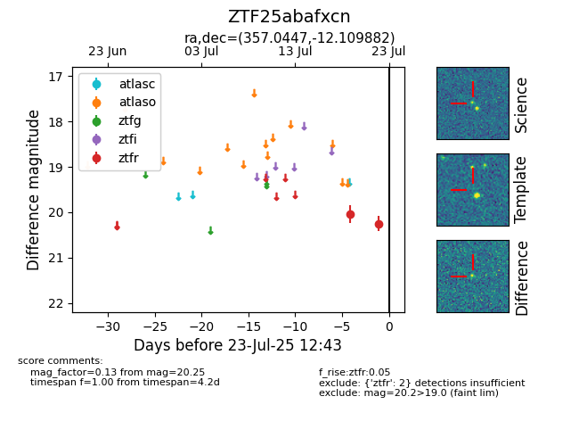

Target ZTF25abafxcn at 2025-07-23 12:43, see:
FINK: fink-portal.org/ZTF25abafxcn
Lasair: lasair-ztf.lsst.ac.uk/objects/ZTF25abafxcn
ALeRCE: alerce.online/object/ZTF25abafxcn
alt names
ZTF25abafxcn (ztf,fink)
coordinates:
equatorial (ra, dec) = (357.0447,-12.10988)
galactic (l, b) = (75.2072,-68.89220)
photometry
last ztfr=20.25
2 ztfr detections
